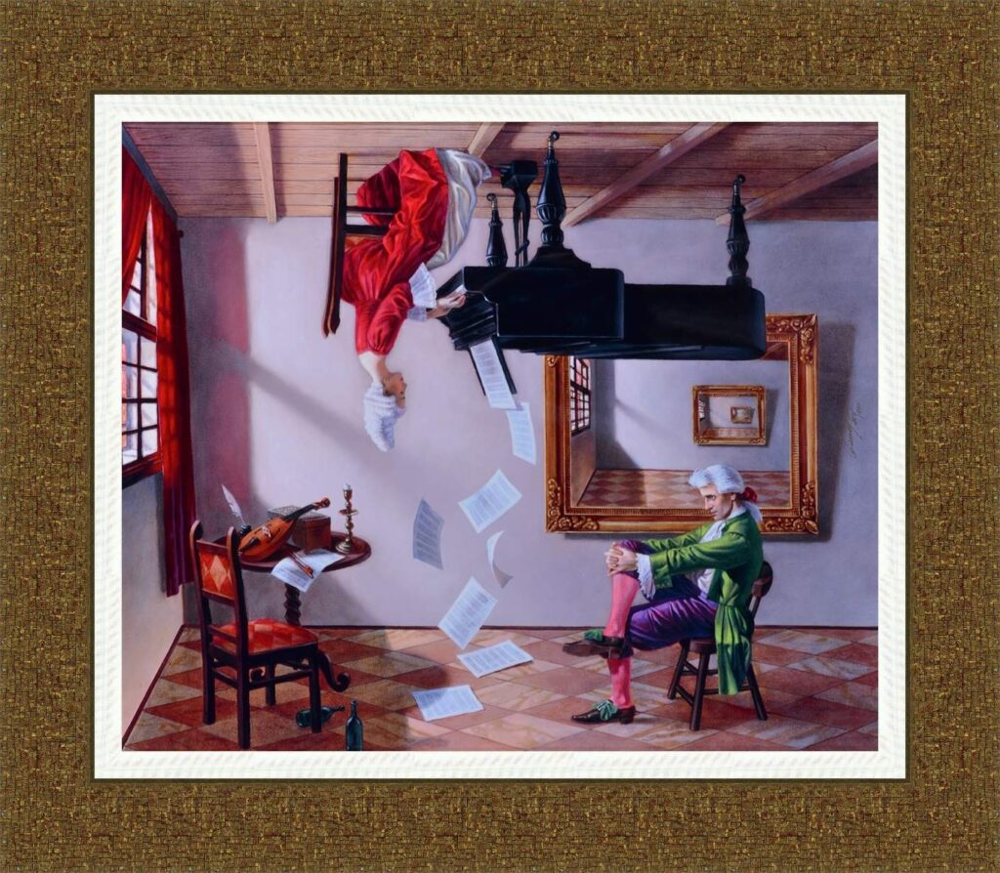
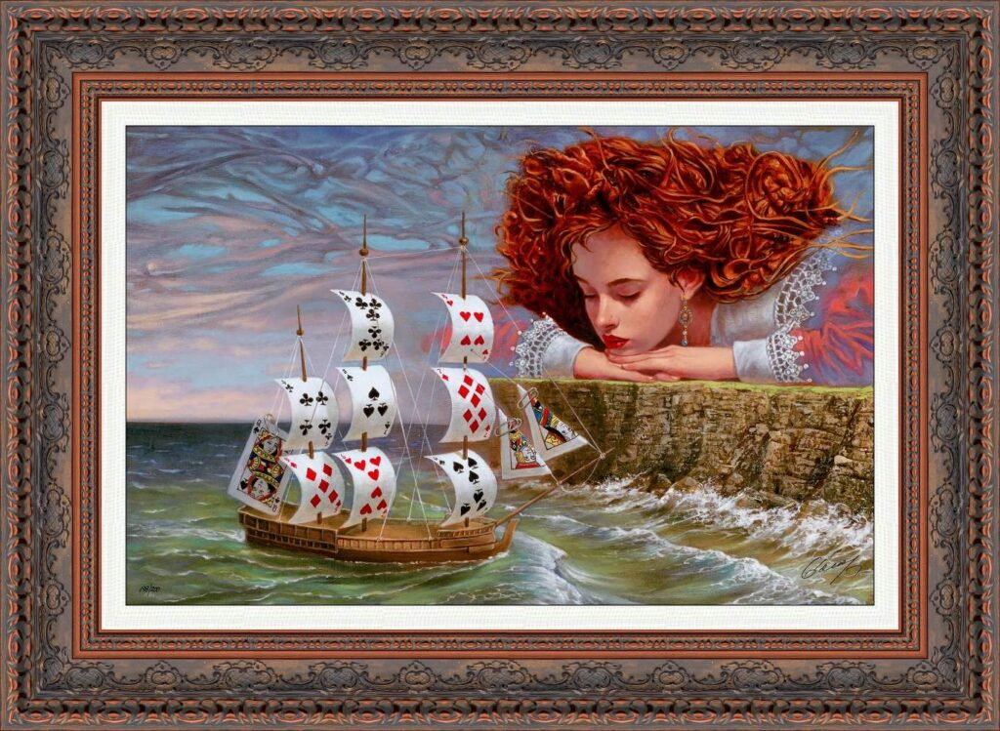
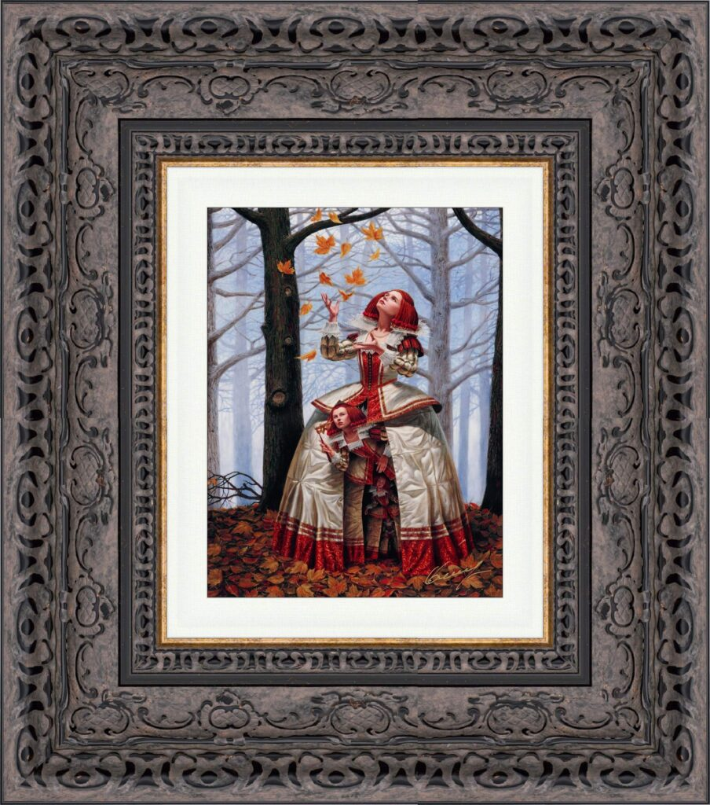
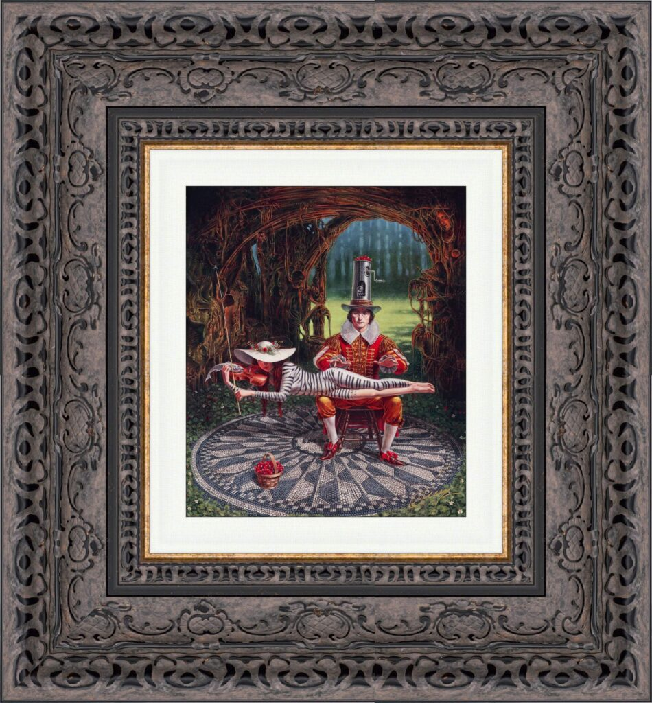
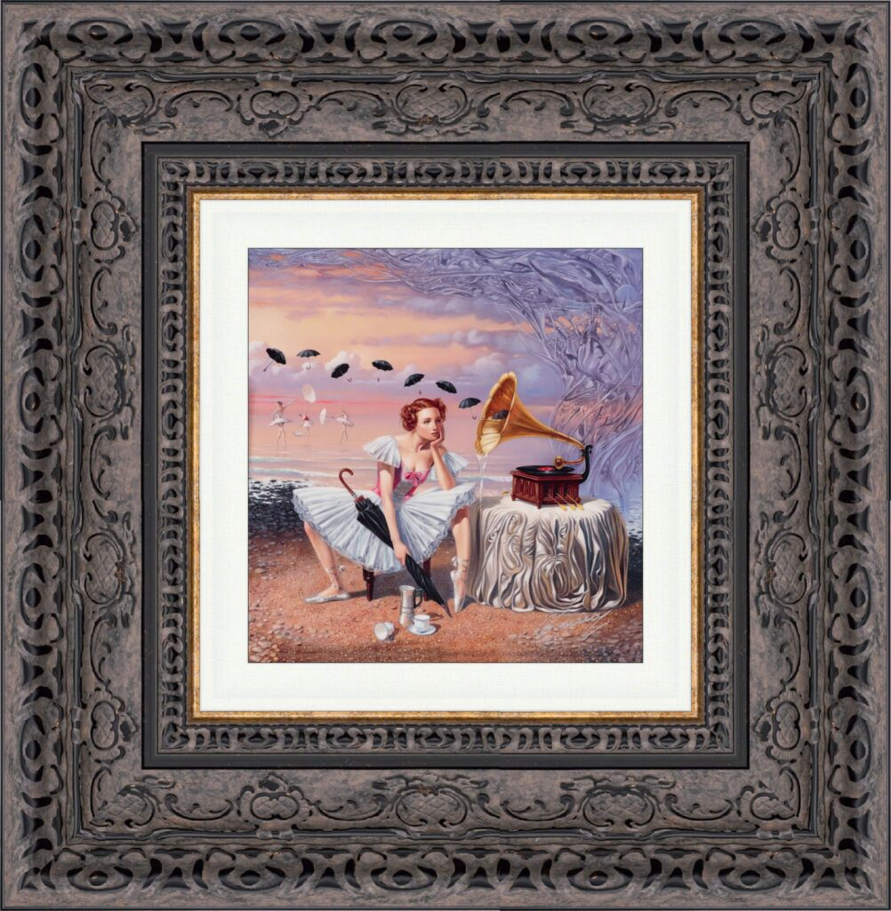
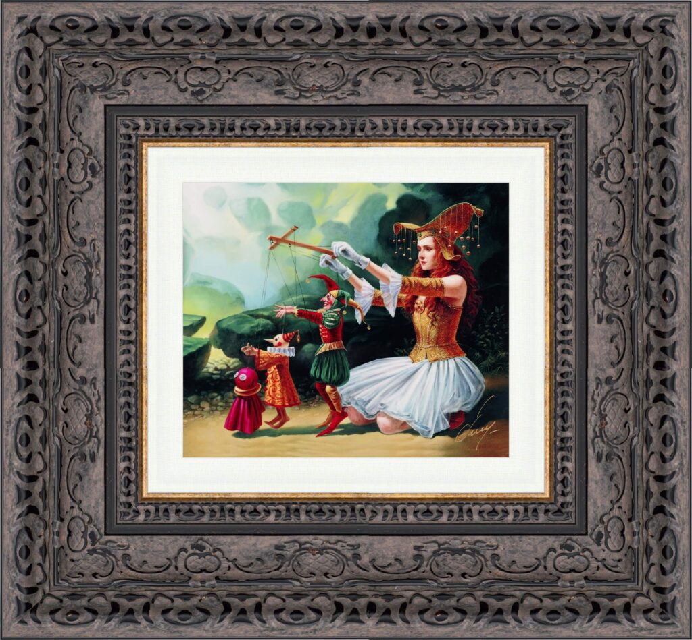
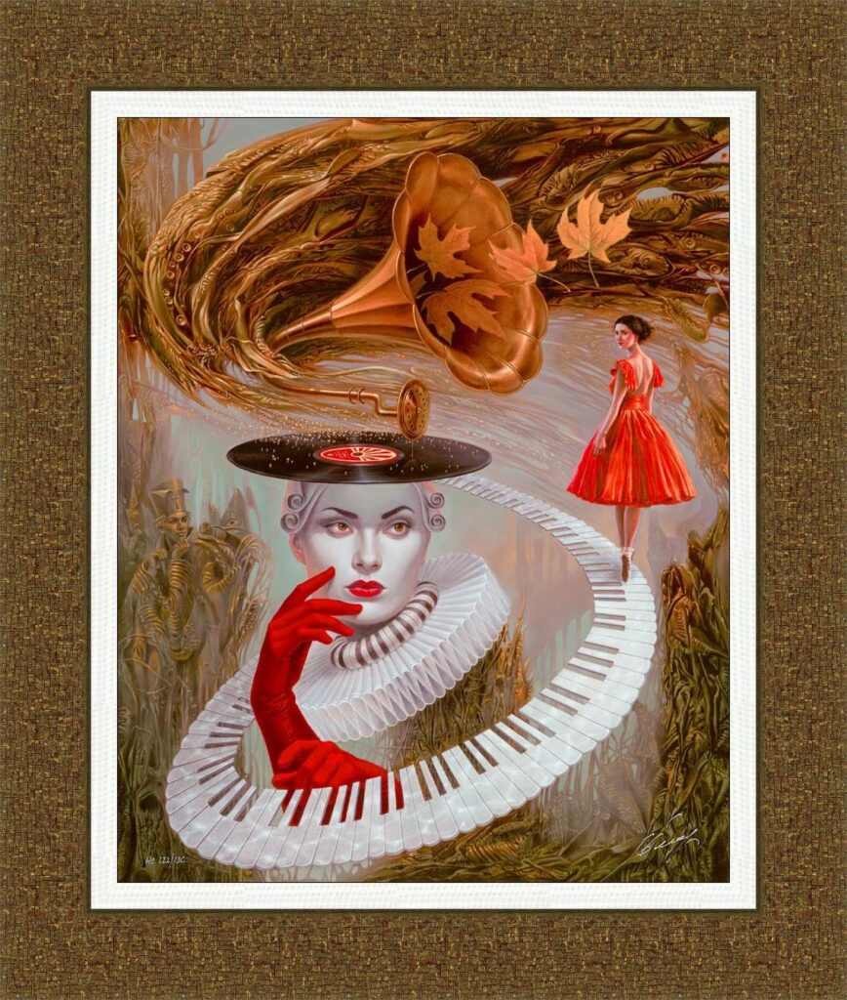
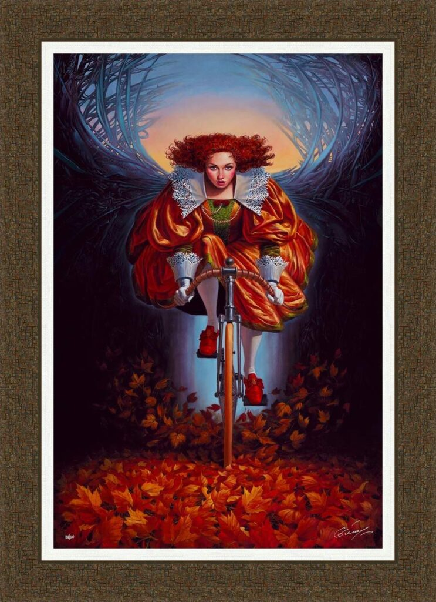
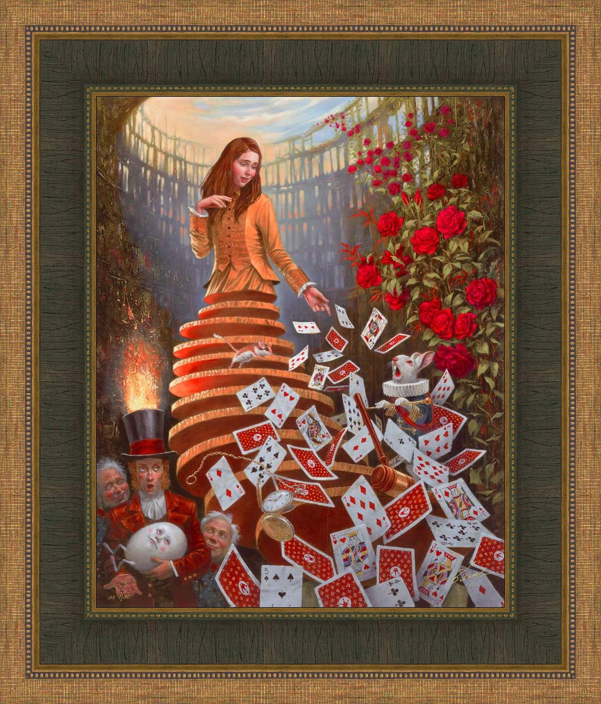
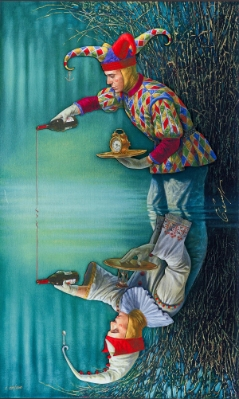

Michael Cheval
Artist: Michael Cheval
Biography & Style:
Michael Cheval is the world’s leading contemporary artist specializing in Absurdism . While often mistaken for Surrealism, Cheval distinguishes his work by a crucial rule: while Surrealism is the product of random dreams, Absurdism is a game of inverted logic.
Every painting by Cheval is a visual riddle designed to be solved. He combines the hyper-realistic technique of the Dutch Golden Age masters (reminiscent of Vermeer or Dalí) with a modern, literary wit. His characters—often dressed in elaborate Renaissance or Victorian attire—exist in a world where time is fluid, gravity is optional, and music can be seen as well as heard.
Cheval views the spectator not as a passive observer, but as a “co-author” of the work. His goal is to draw the viewer into a silent conversation, challenging them to find the hidden metaphors and unlock the narrative within the canvas. From his mind-bending optical illusions to his poignant metaphors on love and memory, Cheval’s art is an intellectual experience as much as a visual one.
Key Elements of His Work:
- Signature Style: Absurdism (Logic turned upside down).
- The Aesthetic: Hyper-realistic detail, rich jewel tones, and classical “Old Master” lighting.
- Recurring Themes: The Jester (The Fool), The Muse, inverted gravity, musical instruments, and anachronisms (e.g., typewriters or bicycles in historical settings).
- Popular Mediums: Dye Sublimation on Aluminum (for a high-gloss, modern finish) and Giclée on Canvas.
The Collection

Discord of Analogy II

Winds of Fortune

Enigma

Imagine II

Melody of Rain

Evolution

Sounding Silence

On the Wings of Fall

Nothing but a Pack of Cards
